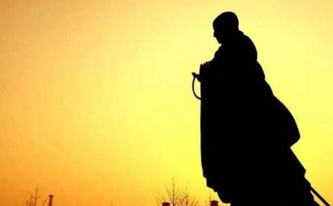

唐朝时，
“玄奘此毒身深可厌患，所做事毕，无宜久住。愿以所修福慧回施有情，共诸有情同生睹史多天弥勒内眷属中奉事慈尊，佛下生时亦愿随下广作佛事，乃至无上菩提。”
上面是玄奘大师的最后遗言，表明他发愿往生弥勒菩萨身边。
据经载，弥勒菩萨是与
玄奘大师的晚年
唐高宗麟德元年（664年），玄奘大师六十五岁，他依然在玉华寺翻译
在玄奘大师的一生中，他第一次发出了这种不自信的、怕自己的工作无法完成的担忧之辞。实际上，由于多年劳累，在翻译完《大般若经》以后，他自己就觉得体力开始衰竭，甚至觉得自己行将就木。
不久，他又对弟子们说了一段话，几乎可以看作是他的遗言：“若无常后，汝等遣我宜从俭省，可以蘧蒢裹送，仍择山涧僻处安置，勿近宫寺。不净之身，宜须屏远。”
僧人讲死，多以无常代之。他在这里提到了“无常”，说我无常以后，你们在送我的时候，一定要节俭，不要用很多的礼节，要用最简单的方式裹送，把我安置在僻静的地方，不要靠近宫室和寺院。他认为肉身是不净的，应该远离这些地方。
同年正月初三，玄奘大师的弟子恳请玄奘大师开始《大宝积经》的翻译，这也是一部很重要的佛经。玄奘大师在勉强翻译了开头的几行以后，突然停了下来，他犹豫了很长的时间，平静而凝重地看着他的弟子，神色黯然地对大家说：“此经部轴与《大般若》同，玄奘自量气力不复办此，死期已至，势非赊远。”
他说：这部《大宝积经》的分量不亚于《大般若经》，我自己觉得我的体力和精力已经不足以再翻译如此大部的佛经了，“死期已至”，不是“将至”，而是我的死期已经到了，不远了。说完这句话以后，玄奘大师从此绝笔，停止了翻译工作。他表示，要把此后可以预见的很少的岁月留给自己去礼
正月初八，玄奘大师的弟子之一玄觉法师，梦见一尊庄严高大的浮图突然倒塌而骤然惊醒，他担心这个梦是自己会出什么事的征兆，于是赶紧就去找他的师父玄奘大师，请玄奘大师解梦。
玄奘大师非常明确地告诉他：“非汝身事，此是吾灭谢之征。”意思是说：这跟你没关系，而是我将要离开这个世界的征兆。
这是对正月初八玄觉法师做梦的真实记载，我们后人没有资格、也没有这个道理去揣测、去枉自判断其中的真假，因为高僧是不打诳语的，这是戒律规定的，更何况他们对玄奘大师又那么崇敬。
仅仅一天以后，正月初九，曾经翻越过无数崇山峻岭、曾经跋涉过无数滔滔江河都不在话下的玄奘大师，居然在屋子后面跨越一道小小的水沟时摔了一跤。虽然只不过是稍微擦破了脚腕处的一点点皮而已，玄奘大师却从此倒下，病情急转直下。
正月十六，玄奘大师的病情已经十分严重，口里喃喃自语：“吾眼前有白莲花，大于盘，鲜净可爱。”说他见到了很大的白莲，比盘子还大，非常的洁净，非常的可爱。
第二天，玄奘大师又梦见在他住的禅房里突然出现了成百上千的人，非常高大，身穿锦绣服装，在他禅房里来回穿行，院子后面的山陵之间突然布满了鲜艳的金幡、旗帜，林间奏响了各种各样的音乐，门外停满了装饰华丽的车子，车子上装满了各种各样的食物，来供养玄奘大师。玄奘大师一面说：“玄奘未阶此位，何敢辄受？”一面却还在不停地进食。
弟子赶紧把玄奘大师叫醒，玄奘大师睁开眼睛，把自己刚才看见的事情告诉了随时等候在他身边的玉华寺寺主慧德法师，而这个寺主非常恭敬的把玄奘大师的这些描述记下来，留给了后人。
玄奘大师同时还对慧德法师说：“玄奘一生已来所修福慧，准斯相貌，欲似功不唐捐，信如
在生命弥留之际，玄奘大师作为一代高僧，还在竭尽自己最后的精力印证
当然他清楚地知道，自己留在这个世界上的时间已经不多了，于是他下令自己的弟子，把已经翻译完成的佛经编一个目录，看看到底翻译了多少。统计下来，从西天求回来的佛经还有五百八十二部没有来得及翻译。实际上这已经是玄奘大师在做自我总结。
玄奘大师又吩咐众僧，为他造像写经，广为施舍，同时他按照佛教的戒律，把自己用的东西全部施舍给寺里的僧众。
玄奘大师做好了充分的准备，
从记载上来看，这以后玄奘大师的病情似乎稳定了一段时间，或者也就是世俗所谓的“回光返照”。
在正月二十四日那天，玄奘大师还很清醒，他让一个叫宋法智的塑像工人，在玉华寺的嘉寿殿竖起一个菩提像，把骨架搭好。
他召集了所有身边的翻译佛经的弟子，留下了在人世间最后的话：“玄奘此毒身深可厌患，所做事毕，无宜久住。愿以所修福慧回施有情，共诸有情同生睹史多天弥勒内眷属中奉事慈尊，佛下生时亦愿随下广作佛事，乃至无上菩提。”
玄奘大师说：我自己的俗身是不净的，这个俗身我已经厌恶了，我在这个世间所要做的事情已经做完了，不必要再待着。我不是为我玄奘个人修福慧，我修的这一切我愿意把它回报给人世间仍然活着的人。我
在接下来的日子，玄奘大师几乎就不说话了，只是不停地念诵佛经，皈敬弥勒、如来，愿往生弥勒
也就是说，他在这个时候不停地吟诵的，我们在今天依然可以复原，他一定是不停地在吟颂皈依，他一定是在用佛当年所使用过的语言——神圣的梵语，不停地在复诵着皈依。
二月初四夜开始，玄奘大师右手支撑着头部，左手舒放在左腿之上，非常平缓地，右胁而卧，再也不动半分了。这是玄奘大师圆寂前的最后姿态，也就是玄奘大师肉身的最后姿态，我们看见卧佛就能想到这个姿势。
二月初五夜半时分，他的弟子问玄奘大师：“和上决定得生弥勒内众不？”看见玄奘大师那么长时间一直在念诵佛经，准备离开这个世界，他的弟子问玄奘大师，和上，您是不是已经决定可以生到弥勒佛净土呢？
玄奘大师回答说：得生。
这是玄奘大师在这个世界上留下的最后两个字了。
玄奘大师十三岁皈依
唐高宗在二月初三得到玄奘大师因损足得病的消息，初七就派御医带着药物赶往玉华寺。等御医带着皇上亲赐的药赶到的时候，玄奘大师已经停止了呼吸。玄奘大师圆寂的消息传到长安，举国悲悼，唐高宗哀叹：“朕失国宝矣！”甚至为了玄奘大师而罢朝数日。
第二天，唐高宗又对群臣提起这件事：朕国内失奘法师一人，可谓释众梁摧矣，四生无导矣。亦何异于
二月二十六日，唐高宗下旨，玄奘大师所有丧事费用由朝廷负责。三月初六，又下令暂停翻译工作，已经完成的部分由政府出资传抄，尚未完成的交慈恩寺保管，不得遗失。可惜的是，后来绝大部分经书几乎全部遗失。
三月十五日，唐高宗又一次下诏：玄奘大师葬日，宜听京城僧尼造幢盖送至墓所。皇帝特许玄奘大师下葬的那一天，京师所有寺庙造的各种旗帜、宝冢、伞盖等送到玄奘大师的葬地。玄奘大师的灵柩运回京城，安置在慈恩寺翻经堂，每天前往哭墓的僧俗人数成百上千。
四月十四日，按照玄奘大师临终前的心愿，将他葬于浐水之滨的白鹿原，这个地方在万年县东南二十里，当时五百里之内赶来送葬的人不计其数。唐高宗总章二年（669年），迁葬到樊川北原，并在当地营造塔宇寺庙。唐中宗神龙元年（705年），又下令在两京，也就是长安和洛阳各建造一座
这些都足以看出玄奘大师的地位和声望。在玄奘大师圆寂后一百八十年后的唐武宗会昌五年（845年），发生了